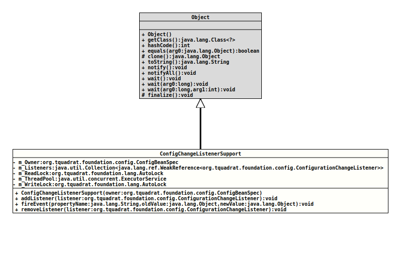

Class ConfigChangeListenerSupport
java.lang.Object
org.tquadrat.foundation.config.spi.ConfigChangeListenerSupport
@ClassVersion(sourceVersion="$Id: ConfigChangeListenerSupport.java 930 2021-06-20 18:08:47Z tquadrat $")
@API(status=STABLE,
since="0.0.1")
public class ConfigChangeListenerSupport
extends Object
Provides support the event handling to the configuration beans.
- Author:
- Thomas Thrien (thomas.thrien@tquadrat.org)
- Version:
- $Id: ConfigChangeListenerSupport.java 930 2021-06-20 18:08:47Z tquadrat $
- Since:
- 0.0.1
- UML Diagram
-

UML Diagram for "org.tquadrat.foundation.config.spi.ConfigChangeListenerSupport"
{kind=link}
-
Field Summary
FieldsModifier and TypeFieldDescriptionprivate final Collection<WeakReference<ConfigurationChangeListener>>The registry for the listeners.private final ConfigBeanSpecThe owner of this support component.private final AutoLockThe read lock for the listener's registry.private final ExecutorServiceThe thread pool for the notifier threads.private final AutoLockThe write lock for the listener's registry. -
Constructor Summary
ConstructorsConstructorDescriptionCreates a newConfigChangeListenerSupportinstance. -
Method Summary
Modifier and TypeMethodDescriptionfinal voidaddListener(ConfigurationChangeListener listener) Adds a new listener.final voidFires the event to all registered listeners.final voidremoveListener(ConfigurationChangeListener listener) Removes the given listener.
-
Field Details
-
m_Owner
The owner of this support component. -
m_Listeners
The registry for the listeners. -
m_ReadLock
The read lock for the listener's registry. -
m_ThreadPool
The thread pool for the notifier threads. -
m_WriteLock
The write lock for the listener's registry.
-
-
Constructor Details
-
ConfigChangeListenerSupport
Creates a newConfigChangeListenerSupportinstance.- Parameters:
owner- The owner of this instance ofConfigChangeListenerSupport.
-
-
Method Details
-
addListener
Adds a new listener.- Parameters:
listener- The new listener.
-
fireEvent
Fires the event to all registered listeners. Each listener will be called in its own thread.- Parameters:
propertyName- The name of the property.oldValue- The old value; can benull.newValue- The new value; can benull.
-
removeListener
Removes the given listener.- Parameters:
listener- The listener to remove.
-